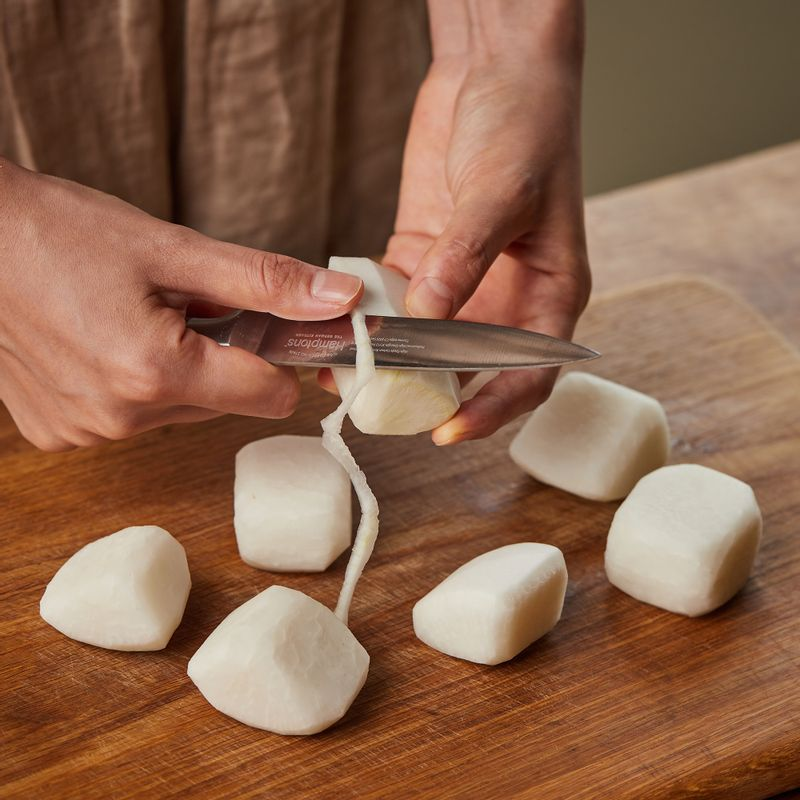
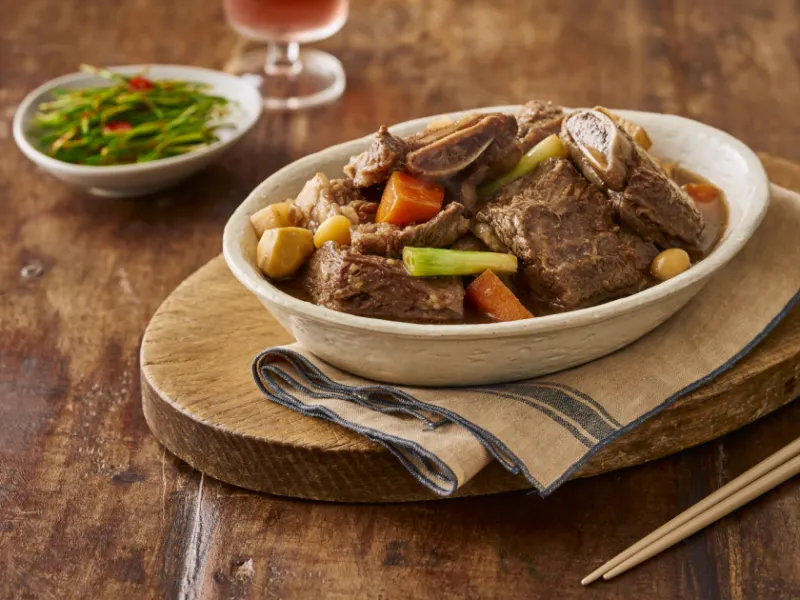

갈비는 1시간 정도 찬물에 담가 핏물을 빼주세요. 끓는 물에 6분 정도 데친 후 찬물에 헹궈 불순물과 지방을 제거해 주세요.
갈비는 1시간 정도 찬물에 담가 핏물을 빼주세요. 끓는 물에 6분 정도 데친 후 찬물에 헹궈 불순물과 지방을 제거해 주세요.
(tip. 갈비의 뼈 부분에서 핏물이 나오지 않을 때까지 데쳐주세요)
(tip. 갈비의 결 반대 방향으로 칼집을 넣게 되면 더욱 부드럽게 익힐 수 있어요)
볼에 양념장 재료를 넣어 섞어주세요.

무는 한입 크기로 자른 후 모서리를 둥글게 다듬어 주세요.
(tip. 모서리를 다듬으면 부서지지 않아 국물이 깔끔할 수 있어요)
양파와 대파는 먹기 좋은 크기로 잘라주세요.
홍고추와 청양고추는 꼭지를 뗀 후 길게 썰고 새송이버섯은 밑동을 자른 후 모양을 살려 슬라이스해주세요.
(tip. 청양고추는 느끼한 맛과 잡내를 잡아주는 역할을 해요)
 냄비에 갈비와 양념장, 물 800ml, 양파, 무를 넣어 40분 정도 삶아주세요.
냄비에 갈비와 양념장, 물 800ml, 양파, 무를 넣어 40분 정도 삶아주세요.
(tip. 국물의 깔끔함을 위해서 뜨는 기름은 걷어내 주세요)
나머지 야채를 넣고 20분 정도 끓인 후 참기름을 뿌려 마무리해주세요.
 맛있게 드세요.